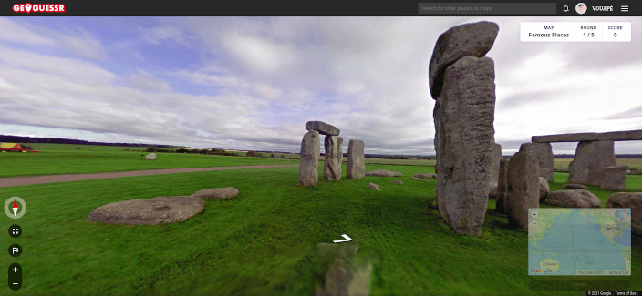

Trago Dicas
Um site com dicas de conteúdo para os quarenteners
GeoGessr
Geogessr é um jogo baseado no google maps. Ele te coloca em um lugar e você tem que adivinhar onde é, com a maior precisão possível. Cada partida tem 5 rodadas. A versão grátis te permite jogar uma vez por dia.
Clique aqui para jogarFall Guys
Fall Guys foi um surto em 2020. O jogo é uma grande olimpíada do Faustão, em que você disputa provas com outros 59 jogadores reais. Parece infantil? Parece infantil. Mas é diversão pra toda a família. Dá pra todo mundo passar raiva junto. Recomendado.
Don't Starve Together
Don't Starve é o mais jogado aqui em casa. É um joguinho muito camarada de sobrevivência num mundo mágico, com mapa aberto bi-dimensional. A cada partida é gerado um mapa diferente, que você precisa explorar pacientemente e encontrar recursos para fazer fogo, se alimentar, se proteger de alguns perigos e enfrentar as estações do ano. A versão "Together" permite vários jogadores. A nossa forma preferida é com dois joysticks, tela dividida, no sofá de casa.
Baratinho pro PC na Steam. Tem também pro Playstation e Xbox.
Patchwork
Patchwork é um jogo de mesa bem simples, pra dois jogadores. Com a temática de tecidos e botões, basicamente você compra as peças e encaixa no seu tabuleiro, no estilo tetris. É um jogo bonito e relaxante, que você joga sem pensar muito.
Página do Patchwork na Ludopédia
7 Wonders Duel
7 Wonders Duel é um jogo de mesa pra dois jogadores, ambientado nas civilizações antigas, que tentam se desenvolver para construir as 7 maravilhas do mundo. Sua mecânica principal é a gestão de coleção para marcar mais pontos. É muito gostoso de jogar.
Atualmente ocupa a 17º posição no principal ranking de boardgames do mundo. Não é pouca coisa.
Página do 7 Wonders Duel na Ludopédia
Rock'n'Roll Manager
Rock'n'Roll Manager é um jogo sobre Rock. Cada jogador gerencia sua banda para ver quem consegue mais fama ao final de 3 temporadas. É um jogo de alocação de trabalhadores em que você faz coisas que bandas de rock fazem: comprar instrumentos, ensaiar, gravar discos, fazer shows, usar drogas e participar de festivais. Jogo nacional que está sempre na mesa.
Página do Rock'n'Roll Manager na Ludopédia
Azul
Azul é um jogo abstrato belíssimo, com a temática de azulejaria moura. Os jogadores disputam e se atrapalham pra ver quem consegue montar o "melhor" mural de azulejos. Tem peças de acrílico que fazem um barulhinho gostoso e a arte impecável. Já lançaram várias expasões, mas a versão original mora no coração ♥.
Página do Azul na Ludopédia
Viticulture
Viticulture é um jogo de alocação de trabalhadores que harmoniza com todos os tipos de vinho. Tem a temática muito bem integrada com a mecânica, em que você administra uma vinícola pra plantar uvas, produzir vinhos, atender os contratos e receber visitantes. A arte é muito bonita e relaxante, apesar de ser um jogo com regras um pouco mais pesadas.
Página do Viticulture na Ludopédia
Taco Gato Cabra Queijo Pizza
Taco Gato Cabra Queijo Pizza é um "party game" que pode ser jogado com adultos e crianças. Basicamente os jogadores colocam à prova seu reflexo, tendo que dar um tapão na carta correta, conforme repetem as palavras Taco, Gato, Cabra, Queijo e Pizza. É muito engraçado e bem baratinho também.
Página do Taco Gato Cabra Queijo Pizza na Ludopédia
Black Stories
Black Stories é um "party game" muito simples que roda bem com 2 ou 200 jogadores.
Cada carta contém uma história e o "narrador" vai ler apenas uma parte para os "investigadores", que farão perguntas para descobrirem o que aconteceu. O narrador só pode responder com "sim" ou "não", até que alguém consiga desvendar o caso - o vencedor.
A edição original trata de casos macabros. Mas existem diversas edições desse jogo: tem de fantasmas, de natureza, de crimes reais, de cinema, pra crianças, de casos engraçados...
No site Ludopédia você pode ver mais de 20 edições. E é bem baratinho.
No Brasil é produzido pela Galápagos, que disponibiliza algumas cartinhas de amostra grátis no seu site.
Dá pra jogar por chat ou até por stories ;)